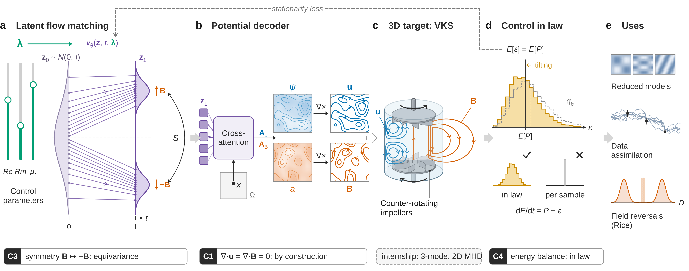

MilaDy 2027
Physics-constrained generative AI for MHD dynamos: preparation, internship report and PhD proposal

What is this site? An independent project, prepared to apply for the M2 internship “Physics-Constrained Generative AI Modelling of Parametric Dynamical Systems” of the ANR MilaDy project. It is neither produced nor endorsed by the École nationale des ponts et chaussées, the LISN, the Observatoire de la Côte d’Azur, the ANR or the supervisors. The internship report is prospective: written as if it concluded the internship, it relies on real but small-scale experiments, run on an ordinary processor and reproducible from the repository.
The site in three stages
| Stage | Content | Pages |
|---|---|---|
| 1. Prepare | Eight graded modules, from first-year undergraduate level to M2 research level: vector calculus and Fourier analysis, turbulence, MHD and dynamo, dynamical systems, probability and transport, deep learning, diffusion and flow matching, physical constraints. About 215 hours, 121 exercises with solutions. | Preparation pathway |
| 2. Do the internship | The internship report: state of the art, a taxonomy of physical constraints with nine proven propositions, three experiments (reversal model, 2D MHD, ABC dynamo) and their discussion. | Internship report · Experiments |
| 3. Prepare the PhD | The work of the four supervisors, six assessed directions, the selected direction, its theoretical part, its costed and assessed experimental plan, its timeline. | Supervisors · PhD proposal |
Five interactive diagrams accompany the pathway: flow matching, Leray projection, constraint in law, dipole reversals and ABC dynamo.
To scale up during the PhD, the Computing and data page describes the repository’s infrastructure: standard data format, catalog of simulations and results, one-command deployment on a cloud VM with a GPU or on a Slurm cluster.
The internship offer
The offer is published by the supervisors: stage_milady_2027.pdf. Here are its key points, summarized from the original English.
Context. Understanding and modeling magnetohydrodynamic dynamos, in which the flow of a conducting fluid spontaneously generates a magnetic field, remains a major challenge in geophysics and astrophysics. Simulating their multiscale turbulence produces large 3D datasets that are hard to store, interpret and reuse for modeling and data assimilation. The generated fields can be highly sensitive to the system parameters and exhibit nonlinear transitions, including abrupt polarity reversals.
Objective. Design and evaluate physics-constrained generative models for parameter-dependent fields in dynamo systems. The generative framework must respect key physical constraints, including the energy balance and the divergence-free condition; encode variations with respect to the control parameters (Reynolds number, magnetic Reynolds number, material properties); and robustly produce 3D fields usable by the reduced models and the data assimilation developed elsewhere in the project.
Work. Develop and test conditional generative models based on diffusion or flow matching; condition the generation on the control parameters and incorporate constraints derived from the PDEs and boundary conditions, through model design, training losses or sampling procedures; validate first on simple PDEs, then evaluate the generated MHD fields with statistical and physical metrics (energy spectra, helicity, divergence control, topology preservation).
Expected outcomes. A comparative study of physics-constrained generative modeling strategies for parametric MHD fields; a concise technical report and reproducible code integrated into the MilaDy toolbox; possible publications; depending on the results, a funded PhD within the project.
Supervision and setting. A 5- to 6-month internship starting in spring 2027, mainly at CEREA (École nationale des ponts et chaussées, Institut Polytechnique de Paris, Champs-sur-Marne), under the supervision of Sibo Cheng (ENPC) and Didier Lucor (LISN, Université Paris-Saclay), in collaboration with Caroline Nore (LISN) and Yannick Ponty (Observatoire de la Côte d’Azur, CNRS). Remote work possible up to 1 to 2 days per week.
References recommended by the offer. FunDiff (Wang, Dou, Shan, Liu, Lu, Nature Communications, 2026); Fukami and Taira (Nature Communications 14, 6480, 2023); then Bansal et al. (ICLR 2024), Bastek, Sun and Kochmann (ICLR 2025), Solera-Rico et al. (Nature Communications 15, 1361, 2024). All are presented in module 8 and in the state of the art of the report.
The MilaDy project
MilaDy (Machine learning modelling for turbulent Dynamos; French title Modélisation par apprentissage automatique des dynamos turbulentes) is the ANR project ANR-25-CE51-0077, coordinated by Caroline Nore (LISN), with the Lagrange laboratory (Observatoire de la Côte d’Azur) and CEREA (ENPC). It started in January 2026 for 48 months. Its two objectives: to study magnetic field reversals and “explosive” dynamos with data-driven reduced models, and to optimize the DRESDYN device (a precessing cylinder) with parametric reduced models. Details and sources: the Supervisors and the MilaDy project page.
What the experiments show
The experiments are small-scale testbeds (CPU, no GPU). All the numbers come from the results digest.
- Zero divergence (2D MHD, E2). Generating the components freely leaves a relative divergence of about 0.4; a soft penalty only slightly reduces it (about 0.3) and degrades the magnetic energy. Generating potentials, projecting at the end or projecting the flow gives zero divergence to machine precision.
- Energy balance in law (E2). Enforcing the mean energy balance during training, including for values of \eta without data, divides the distance to the true law at test values by about 3.6 (0.70 versus 2.52 for a baseline trained just as long without this loss). Enforcing the balance on each sample satisfies it exactly, but by reducing the variance of the dissipation to zero, which is physically wrong.
- ABC dynamo (E3). The measured thresholds, Rm \approx 8.87, 17.60 and 26.80, recover the known dynamo windows.
- Reversals (E1). On a three-mode reversal model, making the velocity field symmetric by construction keeps the two polarities equally likely at every value of the forcing, whereas adding flipped data does so only at values seen during training. The reversal frequency is predicted from the generated samples alone, without any time-dependent simulation, within 14% far from the threshold and within 42% at the threshold, which the generator smooths out. Enforcing the energy balance on each sample multiplies the distance to the true law by 9; the loss in law, useful on a good model, fails on a biased model. See the report, section E1.
Official sources
- Internship offer: https://scheng2024.github.io/stage_milady_2027.pdf (accessed on November 6, 2026).
- ANR MilaDy project: https://anr.fr/Projet-ANR-25-CE51-0077.
- Sibo Cheng’s page: https://scheng2024.github.io/.
- Code and sources of this site: https://github.com/knoel99/milady-2027.